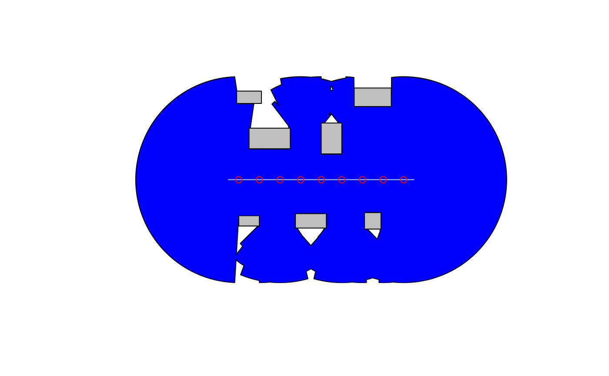

This is a basic example which shows you how to use visor
to calculate the isovist for view points on an arbitrary geometry (a
line) and a set of occluders.
We define the occluder geometries and the viewpoint source geometry (here, a line):
# Define occluder geoemtries
occluders <- st_sfc(
create_occluder(1, 1, 1, 0.5),
create_occluder(4, 1, 1.5, 0.7),
create_occluder(7, 1, 0.8, 0.8),
create_occluder(2, 5, 2, 1),
create_occluder(5, 5, 1, 1.5),
create_occluder(1, 7, 1.2, 0.6),
create_occluder(7, 7, 1.8, 0.9)
)
# Define the viewpoint source geometry
line <- st_sfc(
st_linestring(matrix(c(0, 3, 9, 3), ncol = 2, byrow = TRUE))
)Generate the viewpoints:
vpoints <- get_viewpoints(line, density = 1)Calculate the isovist:
isovist <- get_isovist(vpoints, occluders, ray_num = 160, ray_length = 5,
remove_holes = FALSE)Plot the input geometries and the computed isovist:
plot(isovist, col = "blue")
plot(occluders, col = "grey", add = TRUE)
plot(line, col = "lightblue", add = TRUE)
plot(vpoints, col = "red", add = TRUE)